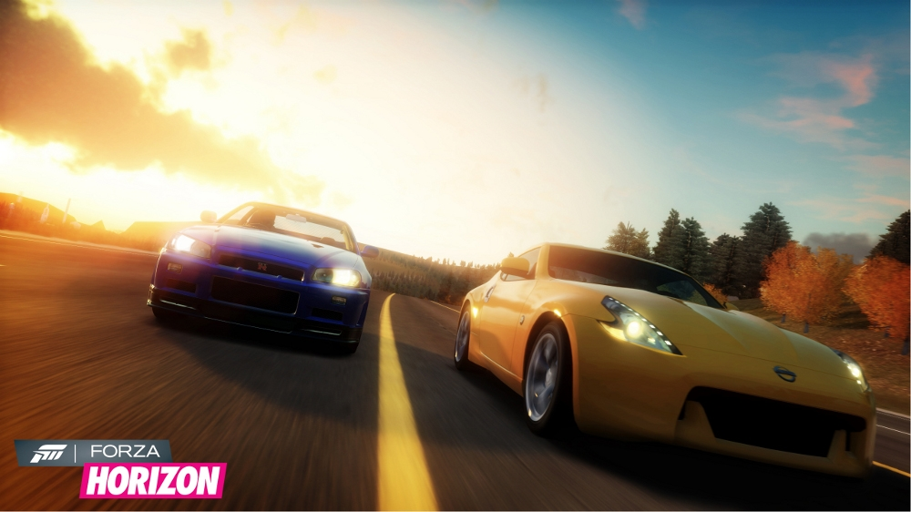
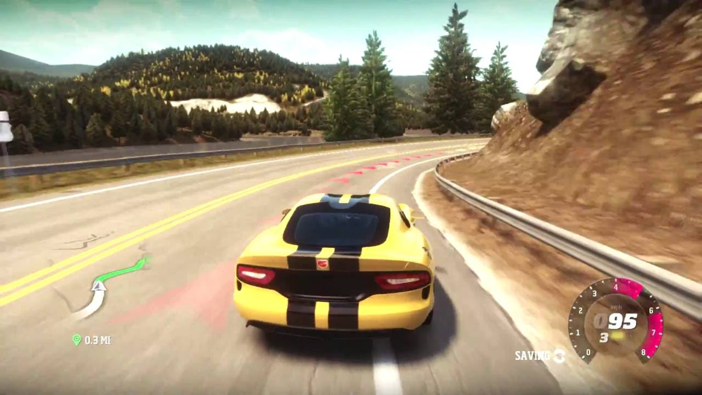
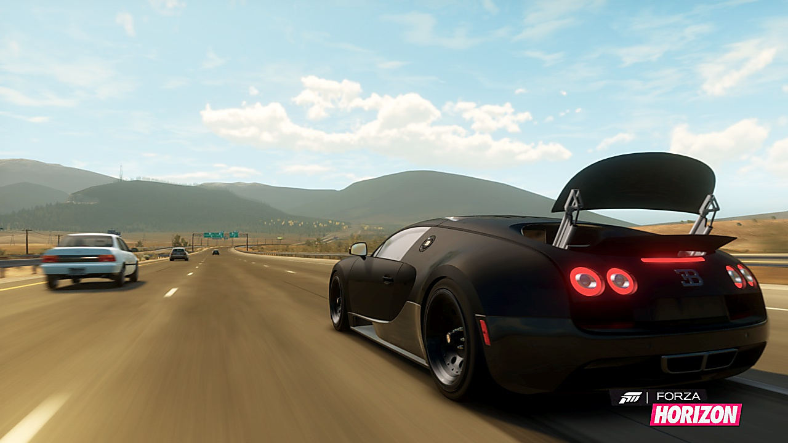

The first game in the series is Forza Horizon
Forza Horizon is a 2012 racing video game developed by Playground Games and published by Microsoft Studios for the Xbox 360 on 23 October 2012. The game is the fifth instalment of the Forza series, having originally spun-off from Turn 10 Studios-developed Forza Motorsport titles. Taking place during the fictitious Horizon Festival, a street racing event, the player's aim is to progress via winning races, while also increasing their popularity level by performing stunts and activities. Unlike previous games in the Forza series, Forza Horizon takes place in an open world that players can explore.
Forza Horizon focuses specifically on casual street racing, rather than professionally on race tracks, as it takes place on a map of temporarily closed public roads. The open-world map that players can explore is based on the U.S. state of Colorado. It features multiple types of races, such as circuit races, off-road rally, and traditional point-to-point races. The roads feature both AI traffic and, when playing online, other player-controlled drivers.
Players may challenge the other racers they encounter to a one-on-one race to a given location. The races start at the current location, and finish at a randomly generated way-point, usually more than 500 metres away from the player and their opponent.
A skill system is implemented in the game; players earn popularity during races by driving aggressively. Acts such as drifting, jumping over obstacles and getting a car on two wheels all contribute to the player's popularity level. These can be chained together in a combo, which in turn affects the money players are paid at the end of a given race. As a player's popularity level increases new special events are unlocked, such as races against helicopters and planes.